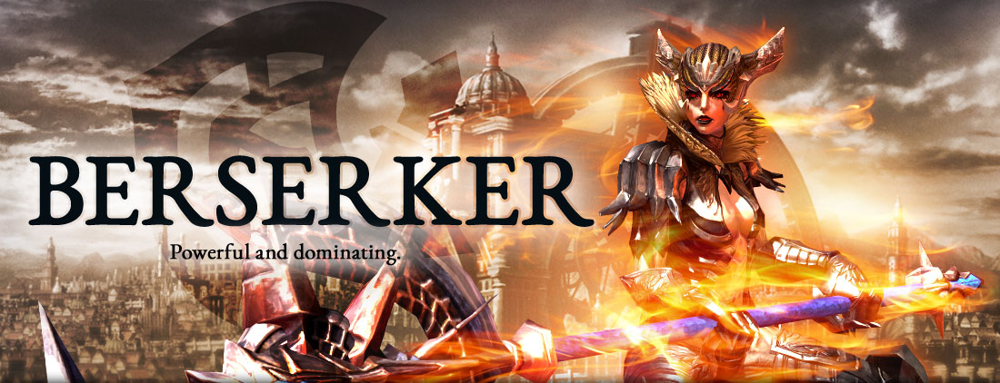

Berserker

Les Stats
Arme :
augmente les dégâts de 9.3% en cas d'attaque sur des monstres enragés
-----------------------------------
augmente les dégâts de 9.3% en cas d'attaque sur des monstres enragés
augmente les dégâts de 6%
augmente les dégâts de 6.9% lorsque vous attaquez par derrière
Torse :
augmente les dégâts de frappe tonnerre 8%
-----------------------------------
réduit les dégâts de 6%
réduit de 6.9% les dégâts venant d'attaques frontales
réduit de 10% les dégâts infligés par les monstres enragés
Gants :
augmente le facteur de cc de 9
augmente le vitesse d'attaque de 2.25%
augmente la puissance de 5
Bottes :
réduit le durée des effets de ralentissement de 24%
augmente la constitution de 4
augmente la vitesse de déplacement de 6%
Les Glyphes

Les Rotations
Aver rage féroce
Rage Féroce -> Soif de sang -> Broche
Core :
Frappe de Tonnerre -> Cyclone -> Frappe de Tonnerre -> Coup Vampirique -> Offensive Foudroyante -> Écrasement -> Coup Destructeur
Sans rage féroce
Ulti :
Frappe de Tonnerre -> Coup Vampirique -> Offensive Foudroyante -> Écrasement -> Frappe de Tonnerre -> Cyclone
Eau-forte
Arme & gants:
Tranchant 2 / 3 / 4
Torse & bottes:
Fondation 2 / 3 / 4
Les nivéots

Les bijoux
Boucle d'oreille / Collier / Bague meurtrière de lachelitas cauchemardesque
Boucle d'oreille / Bague meurtrière du guerrier impitoyable
Broche éclatante de la déesse ( si possible ) ou une broche prestegravure
sous-vêtement : facteur cc 12 / 16 / 20